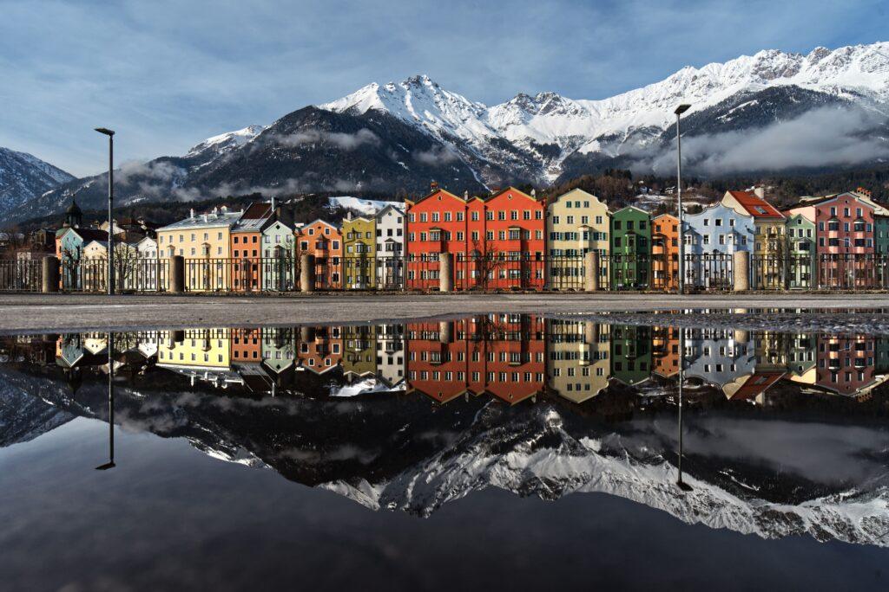
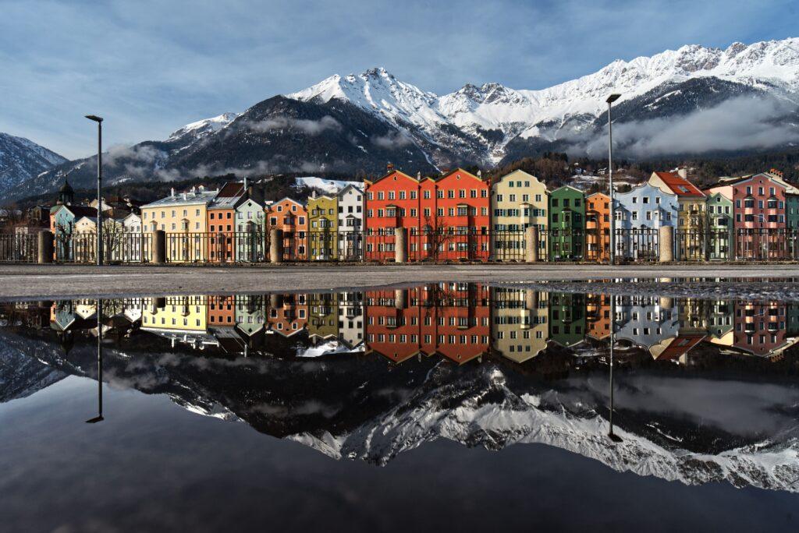
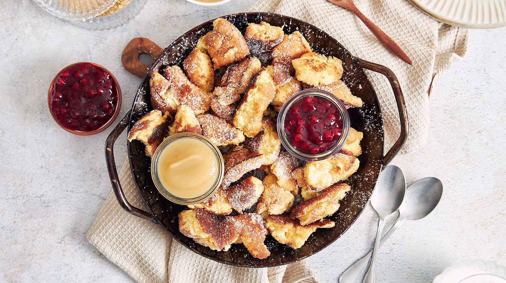
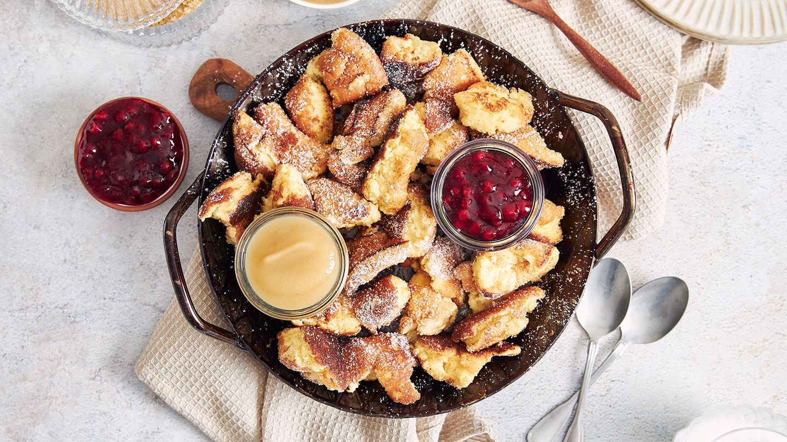

Monuments
Austria is a country of majestic landscapes, imperial history, and rich cultural heritage. From the grandeur of Schönbrunn Palace in
Vienna to the serene beauty of Hallstatt’s alpine village, each landmark tells a story of Austria’s past and present. Explore the
classical music legacy of Salzburg, the artistic treasures of Vienna, and the picturesque charm of Tyrol’s mountains — Austria offers
a perfect blend of history, culture, and breathtaking scenery.
SHOW MORE
SHOW MORE


 



 
